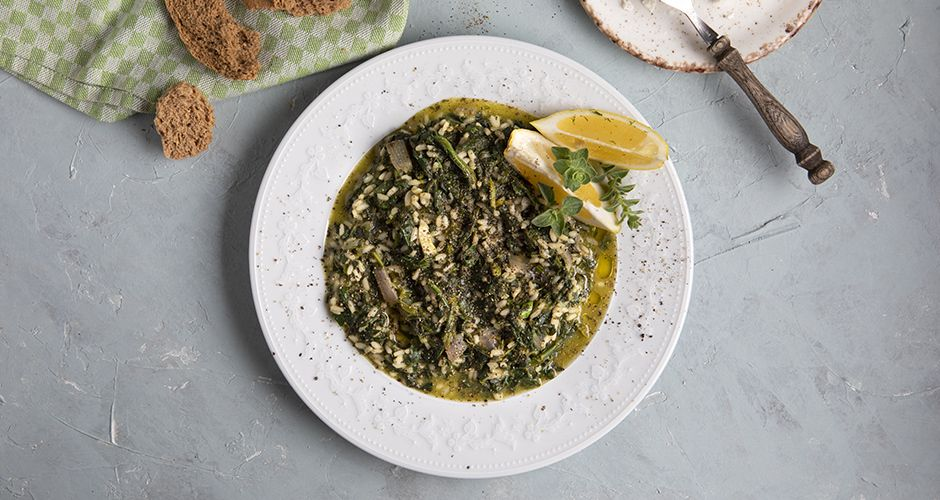

Σπανακόρυζο
Πλήρης συνταγή
Σπανακόρυζο - Άκης

Γρήγορη συνταγή
Υλικά
- 1 κρεμμύδι
- 1 σκελίδα σκόρδο
- 1/2 ματσάκι άνηθο
- 2 φρέσκα κρεμμύδια
- 1 κιλό σπανάκι
- 1 λίτρο ζωμό λαχανικών
- 200 ml κρασί λευκό
- ~100 γρ. λάδι
- ~250 γρ. ρύζι γλασσέ
- 3 λεμόνια
- Αλάτι
- Πιπέρι
- Ρίγανη
Εκτέλεση
-
Σόταρε το κρεμμύδι και το σκόρδο σε μία κατσαρόλα για 2'. Κόψε το
άσπρο μέρος από τα φρέσκα κρεμμύδια και τα κοτσάνια από τον άνηθο και
πρόσθεσέ τα στο τηγάνι, ανακάτεψε και ρίξε το ρύζι. Σόταρέ τα
όλα μαζί για άλλα 2'. Σβήσε ρίχνοντας το κρασί και περίμενε ~2 λεπτά
μέχρι να εξατμιστεί εντελώς.
-
Βάλε από το ζωμό στην κατσαρόλα μέχρι να σκεπαστούν, και λίγο παραπάνω.
Πρόσθεσε επιπλέον ζωμό κάθε φορά που στεγνώνει, ανακατεύοντας μετά από κάθε
προσθήκη ζωμού. Επανέλαβε μέχρι το ρύζι να είναι σχεδόν ψημμένο.
-
Βάλε το σπανάκι σε ένα σουρωτήρι και πρόσθεσε αρκετό αλάτι. Ανακάτεψέ το,
πιέζοντας ταυτόχρονα το σπανάκι ώστε να βγάλει τα υγρά του. Όταν έχει σπάσει
καλά το σπανάκι και το ρύζι είναι σχεδόν έτοιμο, ρίξε το σπανάκι στην κατσαρόλα
και πρόσθεσε λίγο νερό εάν το ρύζι είναι στεγνό. Κλείσε το καπάκι και βράσε για
5-10 λεπτά. Σβήσε το μάτι και ρίξε τον υπόλοιπο άνηθο και τα φρέσκα κρεμμύδια,
ξύσε τα 2 λεμόνια μέσα στην κατσαρόλα και ανακάτεψε.
-
Σέρβιρε με έξτρα λεμόνι, φρέσκο λάδι και ρίγανη. Καλή απόλαυση!